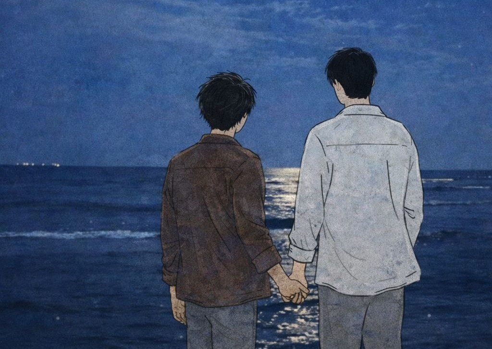
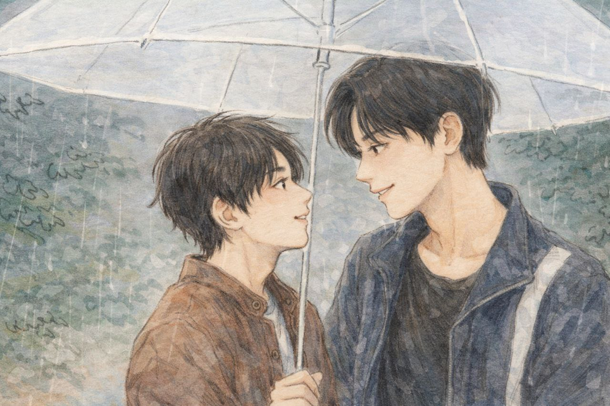

A moment I keep quietly. Aku pengen banget suatu saat bisa jalan-jalan sama abang, berdua aja di tempat yang nggak siapapun tau.

Our first date at the beach. Suatu saat, ayo main ke pantai bareng aku! Biar kita bisa nikmatin waktu berduaan dan lihat senja bareng-bareng. Aku mau bandingin, mana yang paling cantik, kamu atau senjanya.

The rainy day we laughed together. Pasti romantis kan kalau aku sama kamu bisa berduaan di bawah hujan di kota kesayangan kamu, Bandung. Aku mau hujan-hujanan sama kamu, tapi jangan naik Shiro!